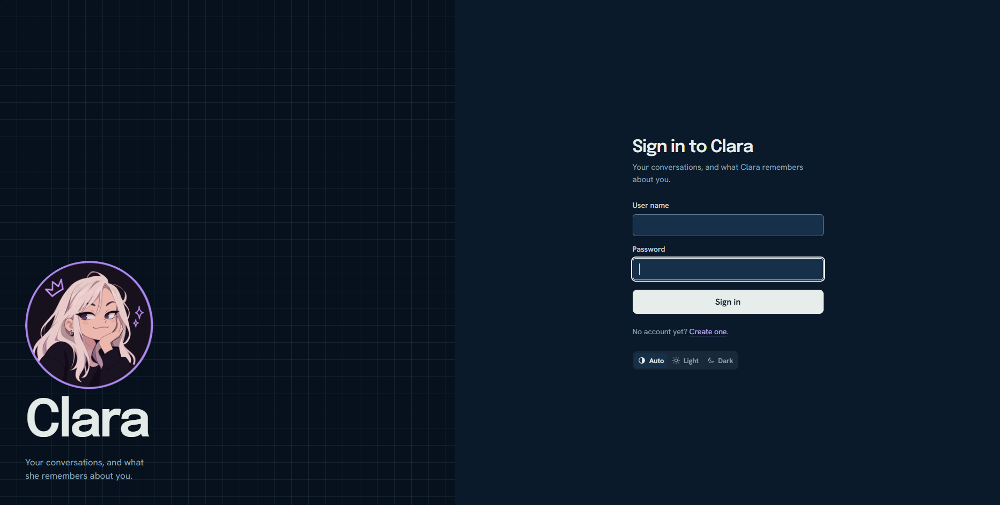

Clara
A personal AI agent with one memory. A single Python server holds the AI and its memory; a website, a terminal and a Discord bot are thin clients that talk to it.
Un agent IA personnel avec une seule mémoire. Un unique serveur Python contient l’IA et sa mémoire ; un site web, un terminal et un bot Discord sont de simples clients qui lui parlent.
- ContextContexte
- Personal project, outside my courseworkProjet personnel, hors cursus
- StatusÉtat
- In progress. Running since October 4, 2026 on a PC with Ubuntu Server.En cours. En service depuis le 4 octobre 2026 sur un PC sous Ubuntu Server.
- Stack
- Python, SQLite, HTTP API, Discord
- ModelsModèles
- Ollama (local or cloudlocal ou cloud), Gemini, DeepSeek, Mistral
- CodeCode
- github.com/Materwan/clara-server


What she does for meCe qu’elle fait pour moi
- Helps me as a conversational AI.M’aide comme IA conversationnelle.
- Reminds me of my tasks on Discord.Me rappelle mes tâches sur Discord.
- Runs scheduled tasks.Exécute des tâches programmées.
- Fixes some of my code from the terminal.Corrige une partie de mon code depuis le terminal.
She can be reached from a website, a web app, a custom terminal and a Discord bot, and she remembers the same things on all of them.
On peut lui parler depuis un site web, une application web, un terminal sur mesure et un bot Discord, et elle se souvient des mêmes choses sur chacun.
How it is builtComment c’est construit
The server is the only process that touches the memory. Every client sends a message and shows the answer. The model behind her can be switched without a restart.
Le serveur est le seul processus qui touche à la mémoire. Chaque client envoie un message et affiche la réponse. Le modèle qui la fait fonctionner peut être changé sans redémarrage.
Design choicesChoix de conception
- One memory.Une seule mémoire. What she learns about a person follows them across every client, while conversations stay per client.Ce qu’elle apprend sur une personne la suit sur tous les clients, tandis que les conversations restent propres à chacun.
- Approval before risky actions.Validation avant les actions risquées. When she works on connected files or repositories, anything that replaces or deletes asks me first without blocking her. She has no tool to approve her own requests.Quand elle travaille sur des fichiers ou dépôts connectés, tout ce qui remplace ou supprime me demande d’abord mon accord, sans la bloquer. Elle n’a aucun outil pour valider ses propres demandes.
- Secrets stay on the server.Les secrets restent sur le serveur. API keys live only in the environment: they are never saved, printed or reachable through the API.Les clés d’API n’existent que dans l’environnement : elles ne sont ni enregistrées, ni affichées, ni accessibles par l’API.
- Tested.Testé. Tests and lint run in CI on Linux and Windows.Les tests et le lint s’exécutent en CI sous Linux et Windows.
The second point matters to me: it is where my interest in AI safety becomes a design rule. See AI and ethics.
Le deuxième point compte pour moi : c’est là que mon intérêt pour la sécurité de l’IA devient une règle de conception. Voir IA et éthique.
Skills usedCompétences mobilisées
Python, AI agents, language models, API design, automation, testingagents IA, modèles de langage, conception d’API, automatisation, tests.